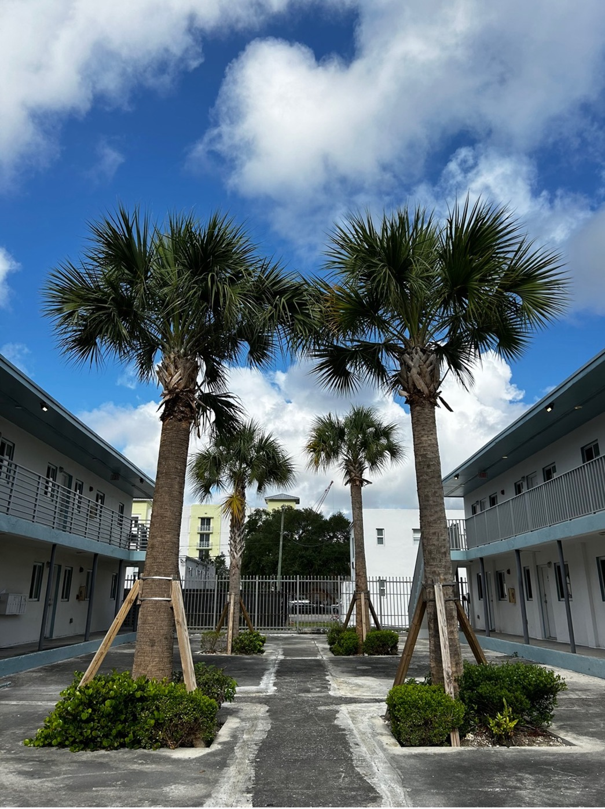
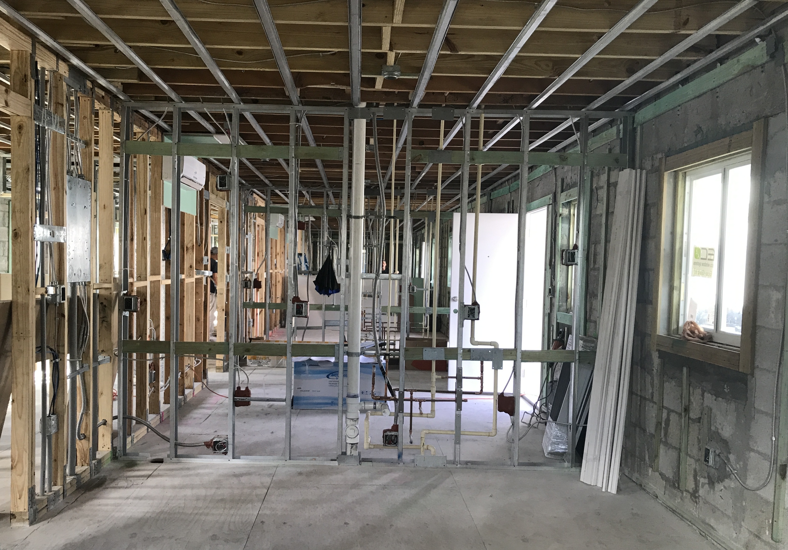
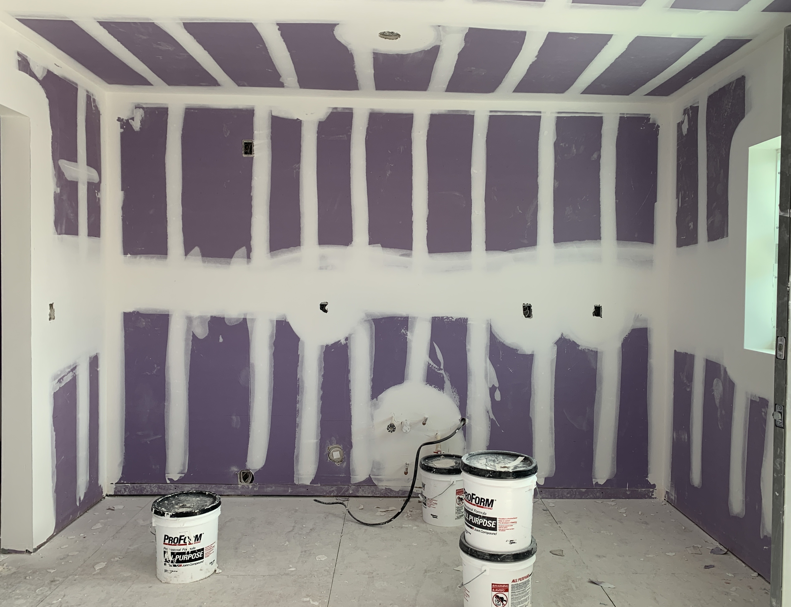

Project Summary

16 Corner Rendering
Background
16 Corner is a portfolio of five multifamily properties comprising 44 units, originally built between 1949 and 1952. Many residents have longstanding ties to Overtown, with some families living in the area for generations.
In 2018, the City of Miami designated the five buildings as unsafe structures, prompting a critical decision between demolition and preservation. Demolition would have resulted in resident displacement and a reduction in available housing units. Under the site’s T3-O zoning designation in the Miami 21 Master Plan, allowable density would have been limited to approximately 12 units, further constraining the housing supply in a neighborhood already experiencing a shortage.
The Omni Community Redevelopment Agency ("Omni CRA") engaged Avra Jain, founder of The Vagabond Group, to lead the preservation of the existing structures. The project aimed to retain original architectural features, preserve housing supply, retrofit the buildings for safety and resilience, and restore healthy housing for current and future residents.
Public-Private Partnership
16 Corner was realized through a collaboration between The Vagabond Group (“Vagabond”), the Omni CRA, Mt. Zion Community Development Corporation (“Zion”), and Miami-Dade County Public Housing and Community Development (“PHCD”), which provided supplemental funding. The Omni CRA provided a $3.8 million forgivable loan—$1.8 million for acquisition and $2 million for construction—with a 30-year Affordable Housing Covenant placed on all units, ensuring long-term affordability. The PHCD provided supplemental funding through the Surtax Loan Program and the Development Inflation Adjustment Fund (“DIAF”) to address funding shortfalls.
Zion joined as a community-based partner, receiving a 7.5% ownership interest in the project. Their role was to help with community outreach and to connect local residents with any vacancy opportunities. The partnership exemplifies a community-driven model that leverages both public and private investment to support equitable development and strengthen local engagement.
Location

16 Corner comprises properties at 1535 NW 1st Place Miami, FL 33136; 1540 NW 1st Court Miami, FL 33136; and 1541 NW 1st Place, Miami, FL 33136. The project is located in Overtown within the Omni CRA district. It spans three parcels along the north-south corridor of Northwest 1st Place, adjacent to one of the areas that has historically faced infrastructure and housing investment gaps in the district.
Scale

The development comprises five two-story, garden-style apartment buildings, covering a total land area of 29,400 square feet with a total building footprint of 20,312 square feet. It includes 44 units: 12 studios, 20 one-bedrooms, 6 two-bedrooms, and 6 three-bedrooms. Renovation began in late 2018 and was completed in 2026.
Significance
The Omni CRA-funded 16 Corner advances the CRA’s mandate to support local residents. Located in historic Overtown, the project responds to the area’s long-standing impacts from major infrastructure investments by expanding the supply of quality housing while preserving neighborhood character.
Most of the original buildings required extensive upgrades. Vagabond oversaw the restoration of architectural features and the renovation of both interiors and exteriors, while also prioritizing local economic impact by engaging local contractors and small businesses. Renovations were completed one building at a time to avoid displacing residents. Tenants were temporarily relocated to vacant units within the complex with the opportunity to return to their original homes upon completion.
As part of the initiative, legacy tenants were retained under existing lease terms at their original rent levels. The average rent for legacy tenants is $837 per unit per month, corresponding to an average affordability level of 33% AMI.
Operating expense for legacy units averages $480 per unit per month, representing approximately 57% of gross rental revenue, which raises long-term financial sustainability considerations. Among legacy tenants, the lowest affordability level is 19% AMI, with a rent of $615 per month for a three-bedroom, two-bathroom unit.
Across the property, the average rent for all tenants is $1,189 per unit per month with an average affordability level of 50% AMI. The upgraded units have significantly contributed to improved living conditions, and one legacy tenant now serves as the on-site property manager.
Above and Beyond
Thoughtful Design
Renovations were tailored to meet residents’ needs. Kitchens now feature custom-built, floor-to-ceiling cabinets for added storage, deep sinks, and tiled backsplashes. Each bedroom includes built-out closets with mirrored doors. An on-site laundry room—previously abandoned—will be fully restored by the end of construction.

Bedroom with Great Natural Light
Built for Longevity
To enhance durability, comfort, and soundproofing, upgrades include resilient channels, whisper mats beneath flooring, and additional mold-resist wool insulation between walls and in ceilings.
Ceiling fans were installed in addition to energy-efficient air conditioning systems to provide flexible climate control. All impact glass windows were replaced with screened models to allow for natural ventilation when desired.
Palm Tress Planted in the Courtyard
Sustainability
Kitchens feature track lighting to reduce energy consumption and improve overall functionality. Additionally, four palm trees now stand in the courtyard between buildings 1540 and 1550, creating welcoming shade and green space for residents. Additional landscaping enhancements are planned for the remaining buildings as the project progresses.
Before and After Pictures
Interior

Kitchen Before Renovation
 Kitchen During Renovation

Kitchen After Renovation
Exterior


North Facade Before and After Renovation

Northeast Facade Before and After Renovation
Challenges
1. Funding Challenge
16 Corner was financed through a combination of public and private sources. Initially, it received a $3.8 million forgivable loan from Omni CRA, a $1.76 million loan from Bradesco bank, and $400,000 in equity. Additional funding included $812,000 from the Surtax Loan Program in 2022 and $585,000 from Development Inflation Adjustment Fund (DIAF) in 2023 issued by Miami-Dade County Public Housing and Community Development (PHCD).

The total projected cost of the project is approximately $9.7 million. In addition to traditional loans, equity, and grants, The Vagabond Group contributed by deferring the developer fee and covering architectural and project management costs. (See funding structure graph below for details.)

Accessing public funding, even for experienced developers, can involve months of applications and extensive documentation. For newer developers, this process can be particularly resource-intensive, and making similar preservation projects financially feasible remains a common challenge across the industry.
2. Carrying Costs and Budget Shortfalls
Building 1560 serves as an example of unexpected cost fluctuations in a prolonged phased development. Supply chain shortages during COVID19 led to sharp increases in construction material costs. Although the original estimate for construction was $760,239.04, final costs rose to nearly $1 million.

The five highest-cost categories for Building 1560 were drywall, electrical, plumbing, structural work, and windows. Plumbing costs nearly doubled, and window costs increased by more than 50% compared to the original contract. Building 1540 and 1560 share the same floorplans. Building 1540 was the first to be completed, and 1560 was the last to be completed. The same five categories for 1540 cost $238,175.77 less than 1560 (see details below). This represents a 112% increase in costs for 1560 compared to 1540.

Budget shortfalls and additional carrying costs were ultimately borne by the developers. For developers with limited access to alternative funding, such overruns can jeopardize project progress.
3. Municipal Coordination
A portion of 16 Corner’s funding came from the PHCD’s Surtax Loan Program. However, each disbursement request (draw) required a lengthy review and approval process, often taking several months. This delay created added financial and administrative burdens, particularly for smaller development firms with limited staffing and funds.
4. Misconception about Renovation
There is a common perception that renovation is more cost-effective than new construction. However, 16 Corner demonstrated that this is not always the case. The buildings had not undergone major improvements since their original construction in the 1950s. Once renovation began, severe deterioration was discovered: compromised foundations, structural instability, and widespread mold in old building materials. In effect, the project became a near-total rebuild. Were it not for zoning restrictions that would have reduced allowable density, a ground-up new construction approach would likely have been more cost-efficient and time-saving.
5. The Cost of Doing Things Right
Renovation on Building 1535 was paused for nearly two years during the COVID-19 pandemic due to a commitment to combined impact of public health constraints and the logistical complexity of relocating residents while maintaining safe construction practices. While relocating tenants off-site and renovating all five buildings simultaneously may have reduced overall project duration and costs, the decision was made to prioritize minimizing resident displacement. This approach extended the construction timeline and increased project risk but aligned with the project’s commitment to resident stability and community preservation.
6. Security Challenges
Construction sites must always guard against theft of materials – however, absorbing that expense is much more difficult for a small project. Several theft incidents occurred during construction. Plumbing and electrical infrastructure comprised of copper and aluminum were stolen on multiple occasions. Additionally, workers’ tools and appliances were taken. To avoid further unexpected costs and delays in replacing materials, the Omni CRA was able to provide a security company at their expense.
7. Infrastructure Challenges: "Silent Killer"

Sewer Snake Condition Before Improvement
When connecting the building’s plumbing to the County sewer system, it was discovered that the property had never been formally connected to the County sewer line. The development team was initially advised to connect to the existing infrastructure. However, upon attempting the connection, the plumber identified a broken sewer snake lodged within the sewer line, making connection impossible. The County indicated that an infrastructure upgrade would not be scheduled until 3 years later. Both the General Contractor and the Omni CRA contacted the Water and Sewer department to seek resolution but did not receive a response. As a result, the project experienced an approximately two-month delay while the issue remained unresolved. It was ultimately by the ownership resolved following escalation to County leadership. This experience highlights the challenges developers may face when unforeseen infrastructure conditions arise, particularly for smaller or emerging developers who may lack the relationships or resources to expedite interagency coordination.
Recommendations from The Developer
1. Developers should not experience extended delays, often for weeks or months, in receiving reimbursements. For projects reaching Certificate of Occupancy (“CO”), the agency should fund the final Pay Application (“PayApp”) to the General Contractor (“GC”) directly or concurrently, with the developer responsible for covering any remaining shortfall.
2. Public officials and agency representatives should leverage the Live Local Act (especially on Real Estate tax reduction) and advocate for statutory language that authorizes local municipalities to extend similar tax treatment to infill affordable housing projects under agency oversight (e.g., “CRA”, “PHCD”), including smaller-scale development with affordability covenants such as fourplexes or eightplexes. Infill affordable housing delivers significant public benefits, including its proximity to public transportation, neighborhood continuity, and efficient use of existing infrastructure, and warrants equal or greater policy support.
3. Establish a dedicated support team and a centralized hotline for affordable housing developers to help facilitate timely resolution of infrastructure, permitting, inspections, and related project issues.
Written and documented by Su Zhang